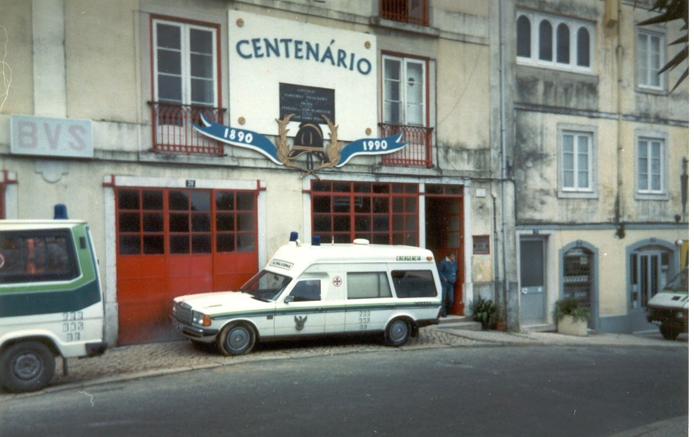
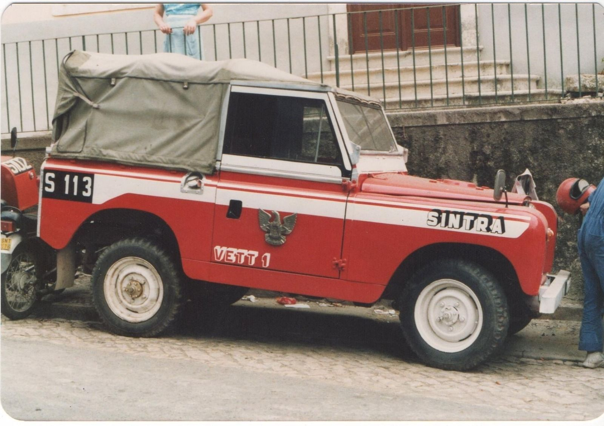
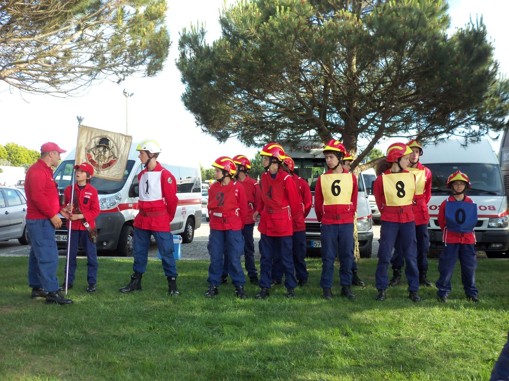

01
01Escola de Infantes e Cadetes
Formamos as próximas gerações de bombeiros, com valores de entreajuda e cidadania.


A Associação dos Bombeiros Voluntários de Sintra é, juntamente com a congénere de Colares, uma das mais antigas associações do concelho, prestando socorro e desempenhando missões humanitárias desde 24 de junho de 1890.
Integra o Comando Sub-regional da Grande Lisboa, na Zona Operacional 2, que reúne os nove corpos de bombeiros do concelho. A área de atuação abrange as freguesias de São Martinho, Santa Maria e São Miguel, Terrugem e São João das Lampas, com cerca de 50 000 habitantes, e a zona marítima entre a praia do Magoito e a praia de São Julião.
A 24 de junho nasce a associação. Em agosto recebe louvor da Rainha D. Amélia.
É nomeada Real Associação de Bombeiros.
Medalha de Ouro por Serviços Distintos, da Câmara Municipal de Sintra.
Oficial da Ordem de Emergência.
Crachá de Ouro da Liga dos Bombeiros Portugueses, no centenário.
Medalha de Mérito Municipal Grau Ouro, da Câmara Municipal de Sintra.
Fénix de Honra da Liga dos Bombeiros Portugueses.
Medalha de Mérito da Ordem de Nossa Senhora da Conceição de Vila Viçosa.
Servir a comunidade com dedicação, profissionalismo e humanismo é o nosso compromisso diário. Conte connosco. Queremos contar consigo.José Bento MarquesPresidente da Direção
A associação é gerida por três órgãos sociais eleitos em Assembleia Geral, com mandatos de três anos.
01Formamos as próximas gerações de bombeiros, com valores de entreajuda e cidadania.
 02
02Fundada em 1950, representa a corporação em cerimónias, desfiles e festividades da região.

03Promove a preparação física e o espírito de equipa, com participação em provas distritais e nacionais.
Por 24 € por ano contribui diretamente para os meios de socorro de Sintra e tem descontos nos nossos serviços.